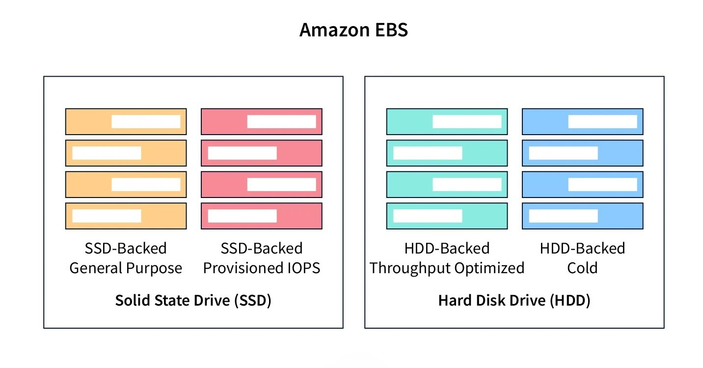
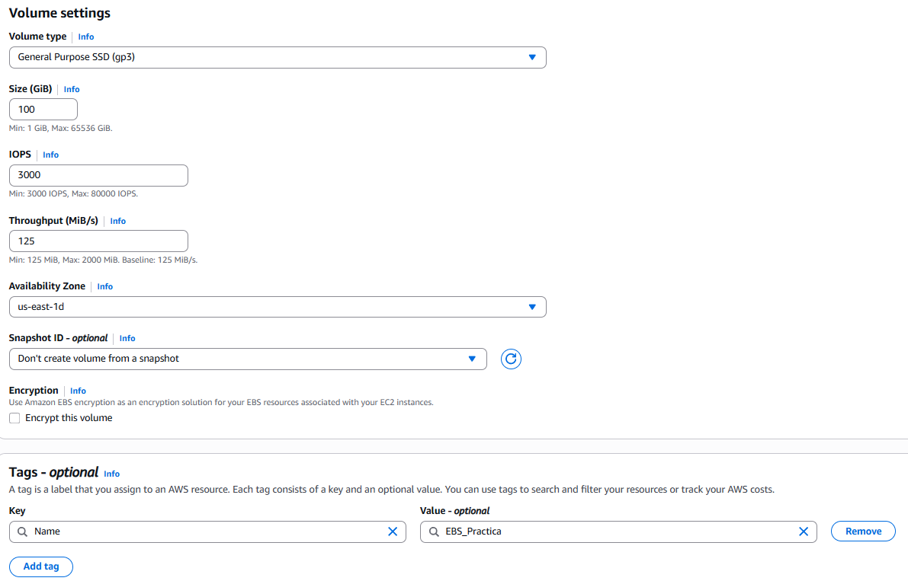
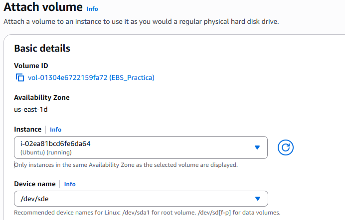
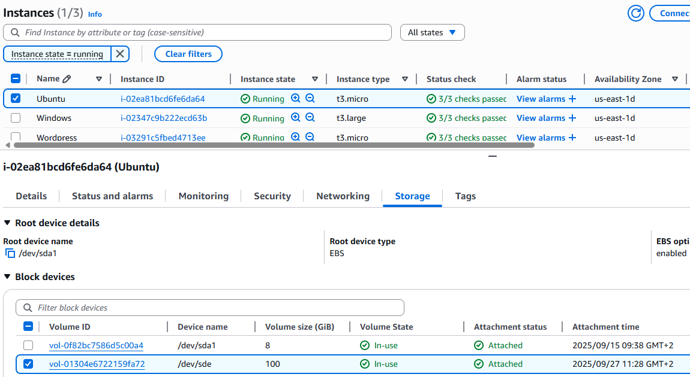
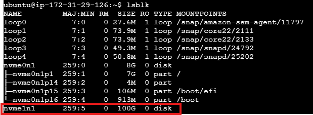
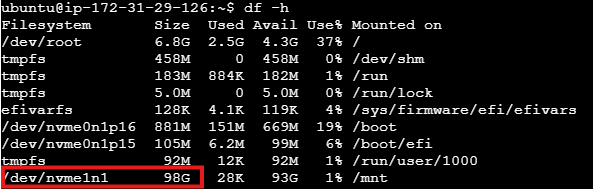
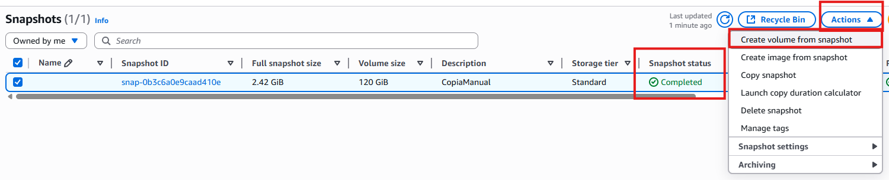

EBS (Amazon Elastic Block Store).¶
Almacenamiento a nivel de Bloque asociada a una instancia EC2.
Ventajas:¶
- Replicación automática dentro de la misma zona de disponibilidad.
- El almacenamiento es persistente, incluso cuando la EC2 es eliminada (al no ser que hayamos modificado dicho comportamiento DeleteOnTermination).
- Se pueden cifrar los datos de forma sencilla.
- Fácilmente escalables, es decir, se puede aumentar su tamaño (no reducir).
Tipos de volúmenes (discos).¶

IOPS
Ejemplo: Una base de datos con muchos accesos de lectura y escrituras de pequeños tamaño priorizarán un disco con alto IOPS.
Throughput
Ejemplo: Un servicio que sirve ficheros de gran tamaño tendrán que priorizar el throughput al IOPS.
-
Unidades de estado solido (SSD):
💥 Genéricos: Los tipos existentes son
gp3(125-2000 MiB/s) ygp2(128-250 MiB/s) ambas con un máximo de 16.000 IOPS.💥 Alto rendimiento IOPS: Los tipos existentes con
io2 Block Express(4.000 MiB/s con un máximo 246.000 IOPS) eio2(1.000 MiB/s con 64.000 IOPS). -
Unidades de disco duro (HDD):
💥 Optimizadas para grandes transferencias de datos:
st1(Throughput Optimized HDD, con 500 MiB/s y 500 IOPS) ysc1(Cold HDD, con 250 MiB/s y 250 IOPS).💥 Existen los
EBS Cold HDDque hace referencia a discos muy baratos aunque lentos que en principio no van a ser accedidos de forma habitual, por ejemplo para almacenar copias de seguridad más antiguas.
| Tipo | Tecnología | Característica principal | Uso típico |
|---|---|---|---|
| gp3 | SSD | Uso general, configurable | Servidores, aplicaciones, BD |
| gp2 | SSD | Generación anterior | Sistemas existentes |
| io2 | SSD | IOPS provisionadas | BD y cargas críticas |
| st1 | HDD | Alto throughput | Big Data, logs |
| sc1 | HDD | Bajo coste | Datos poco utilizados |
Un volumen EBS sólo se puede asociar a una instancia EC2 de su misma zona de disponibilidad.
Práctica.¶
Crea un volumen EBS:¶
- Tipo gp3 (3000 IOPS) de 10GB.
- Crea una etiqueta (tag) con el par "Nombre --> EBS_Practica" para identificar el volumen.
- La zona de disponibilidad debe ser la misma que nuestra máquina.

Asocia el volumen a una instancia Linux.¶
Para ello debemos seleccionar el volumen ➡️ Actions ➡️ Attach Volume.
- Seleccionamos la instancia a la que tenemos que asociarla.
- Seleccionamos la conexión de almacenamiento que tendrá dentro del servidor (/dev/...).

Se puede comprobar que efectivamente lo tenemos asociado yendo a la pestaña de volumenes (storage) de la instancia.

Gestionar disco desde la EC2.¶
Accedemos a la EC2 por SSH y lanzamos el comando lsblk donde podremos ver el volumen asociado.

- Damos formato al volumen EBS.
- Montamos el disco en una carpeta.
- Creamos una carpeta dentro del volumen.
sudo mkfs -t ext4 /dev/nvme1n1
sudo mount /dev/nvme1n1 /mnt
sudo mkdir /mnt/prueba_ebs
Hacerlo autoarrancable.¶
Actualmente si reiniciaramos la máquina el disco habría que volver a montarlo manualmente.
Para que arrancara automáticamente deberíamos averiguar su identificador (UUID) con el comando blkid y añadir su línea de montaje en el fichero /etc/fstab.
UUID=cac49809-b7c0-4ef0-9501-a0e05dad237f /mnt ext4 defaults,nofail 0 2
Puedes comprobar que funciona reiniciando o con los siguientes comandos:
#Desmontar si estaba previamente montado.
sudo umount /mnt
#Montar desde el fichero fstab.
sudo mount -a
#Comprobar si efectivamente se ha montado.
lsblk -f
Incrementar un volumen ya asociado.¶
- EBS ➡️ Seleccionamos el volumen ➡️ Actions ➡️ Modify Volume ➡️ Aumentamos la capacidad (15GB).
Con el comando "lsblk" podemos comprobar que efectivamente se ha producido el cambio.
No obstante tenemos que redimensionar la partición para que ocupe todo el disco.
Con el comando "df -h" podemos comprobar que realmente no estamos haciendo uso los 120GB, si no de los 100GB originales.

Para redimensionarlo y ocupe todo el espacio real hay que indicarle que ocupe el nuevo espacio.
sudo resize2fs /dev/nvme1n1
Posteriormente podremos comprobar con "df -h" que efectivamente ya se está haciendo uso de todo el disco.
Instantáneas (Snapshots).¶
-
Son copias incrementales del volumen EBS, es decir, después de la primera, se almacenan los bloques que han cambiado, no se copia todo de nuevo.
-
Permite restaurar los datos del disco en otro EBS, incluso en otra zona de disponibilidad.
-
Se almacenan de forma redundante, incluso se pueden copiar a otras regiones.
-
Se pueden compartir con otras cuentas de AWS.
-
Se puede automatizar la creación de las instantáneas con LifeCycle Manager.
Funcionamiento.¶
-
Para crear una instantánea vamos a EBS ➡️ Snapshots ➡️ Create Snapshot.
-
Una vez la instantánea está generada (completada), podemos crear un volumen en base a ella.

Recuerda crear el volumen en la misma zona que tus EC2.
LifeCycle Manager